Molecular docking with Autodock4, Vina and Vinardo on BOINC Central
This page explains how to perform molecular docking using AutoDock4, Vina, and Vinardo on BOINC Central.
We describe a web-based job submission interface. For Vina, you can also use Raccoon2.
Setting Up BOINC Central for Molecular Docking
- Create an Account: Visit the BOINC Central website and create a free account. This will allow you to access the platform and submit your molecular docking tasks. You will be asked to provide some additional information, such as the research you are doing, that allows us to filter out spam accounts. Every request is manually reviewed, so please be patient if your account is not approved immediately.
- Select a molecular docking application: After logging in, navigate to the "Job submission" section and select one of the available molecular docking applications: AutoDock4, Vina, or Vinardo. Each application has its own strengths and is suitable for different types of docking tasks.

Batches of jobs
BOINC Central is designed to run 'batches' of jobs. A batch can contain a single job, or thousands of jobs.
You submit docking jobs to BOINC Central in batches. For each submission, you supply two directories of files:
- A directory of 'ligand' files
- A directory of 'receptor' (or in the case of Autodock4, 'map') files.
A job is created for each combination of a ligand file and a receptor file.
Submitting AutoDock4 jobs
Watch the video tutorial
- Prepare Input Files: Prepare a zip archive with receptor maps and a zip archive with ligand files. The receptor maps should be in the format required by AutoDock4: for each map, a .pdbqt file, and possibly additional files ('.map', '.glg', '.gpf', '.fld', '.xyz') with the same base name. The ligand files should be in PDBQT format. Example .zip files:
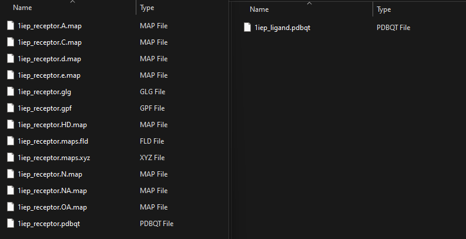
- Upload Input Files: In the "Job submission"->"File sandbox" section, upload zip files containing your receptor maps and ligand files.
- Submit the Job: Go to the "Job submission"->"Submit jobs" section, select AutoDock, and fill in the required fields:
- Maps: Select the zip file containing your receptor maps.
- Ligands: Select the zip file containing your ligand files.
All other fields can be left as default. Click the "OK" button to start the docking job.
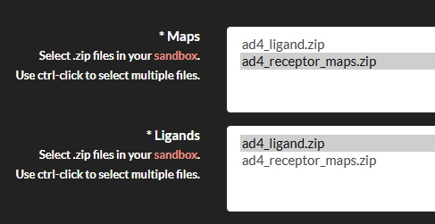
Submitting a Vina Job
Watch the video tutorial
- Prepare Input Files: Prepare a zip archive with receptor maps and a zip archive with ligand files. The receptor maps should be in the format required by Vina, and the ligand files should be in PDBQT format. Here are the example files you can use:
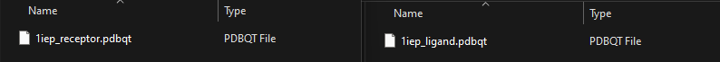
- Upload Input Files: In the "Job submission"->"File sandbox" section, upload zip files containing your receptor and ligand files.
- Submit the Job: Go to the "Job submission"->"Submit jobs" section, select Vina, and fill in the required fields:
- Receptor: Select the zip file containing your receptor maps.
- Ligands: Select the zip file containing your ligand files.
- Center: Specify the center of the docking box (Angstrom) in the format
x,y,z(e.g.,0,0,0). - Size: Specify the size of the docking box (Angstrom) in the format
x,y,z(e.g.,20,20,20).
All other fields can be left as default. Click the "OK" button to start the docking job.
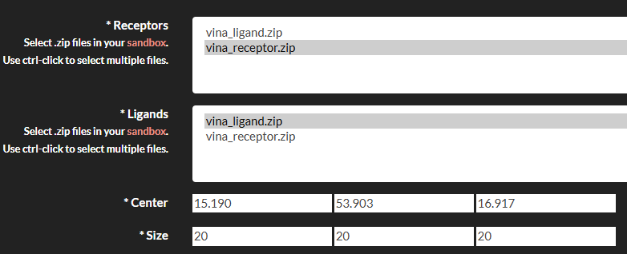
Submitting a Vinardo Job
Watch the video tutorial
- Prepare Input Files: Prepare zip archive with receptor maps and zip archive with ligand files. The receptor maps should be in the format required by Vinardo, and the ligand files should be in PDBQT format. Here are the example files you can use:
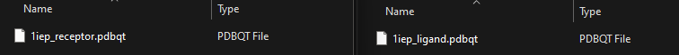
- Upload Input Files: In the "Job submission"->"File sandbox" section, upload zip files containing your receptor and ligand files.
- Submit the Job: Go to the "Job submission"->"Submit jobs" section, select Vinardo, and fill in the required fields:
- Receptor: Select the zip file containing your receptor maps.
- Ligands: Select the zip file containing your ligand files.
- Center: Specify the center of the docking box (Angstrom) in the format
x,y,z(e.g.,0,0,0). - Size: Specify the size of the docking box (Angstrom) in the format
x,y,z(e.g.,20,20,20).
All other fields can be left as default. Click the "OK" button to start the docking job.
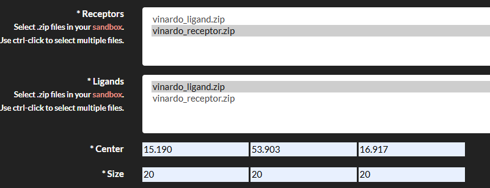
Review Submitted Jobs
After submitting your jobs, you can monitor their progress in the "Job submission->Job status" section. Here, you can see the status of your jobs, including whether they are running, completed, or failed. You can also view the results of completed jobs and download the output files. After you got the results and saved them locally, you can retire the batch. This will remove the batch and all jobs within it, including the results.
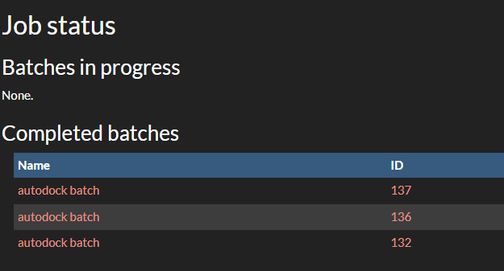
Submitting Vina Jobs using Raccoon2
If you prefer to use a graphical interface for submitting Vina jobs, you can use Raccoon2. Raccoon2 is a user-friendly tool that simplifies the process of preparing and reviewing Vina receptors and ligands. Raccoon2 does not support submitting jobs to BOINC Central directly, but for your convenience we have made a plugin that allows you to submit Vina jobs to BOINC Central directly from Raccoon2. You can find the plugin here.
Watch the video tutorial
Installation
To install the plugin, you need to have Raccoon2 1.5.7 installed (could be taken from here) and plugin downloaded from the releases
Then, navigate to the MGLTOOLS_FOLDER folder,
and put raccoon2_boinc_installer.py there,
where MGLTOOLS_FOLDER is the folder where MGLTools is installed.
Finally, you can install the plugin using the following command:
Linux/Mac:
bash
./bin/pythonsh raccoon2_boinc_installer.py install
Windows:
Before running the command, you need to start cmd as an administrator,
then navigate to the MGLTOOLS_FOLDER folder.
bash
python.exe raccoon2_boinc_installer.py install
where MGLTOOLS_FOLDER is the folder where MGLTools is installed.
Usage
- Open Raccoon2: Launch Raccoon2 and authenticate with your BOINC Central account.

- Prepare Ligands: You can use the sample ligands provided here.
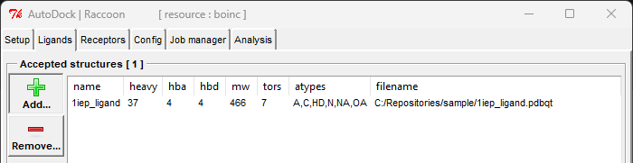
- Prepare Receptors: You can use the sample receptors provided here.
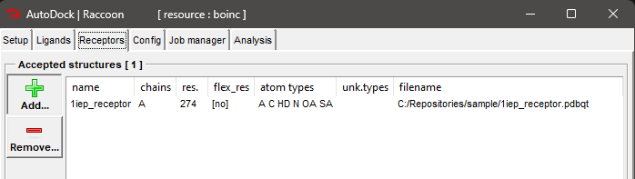
- Configure Docking Parameters: Set the docking parameters, such as the center and size of the docking box.
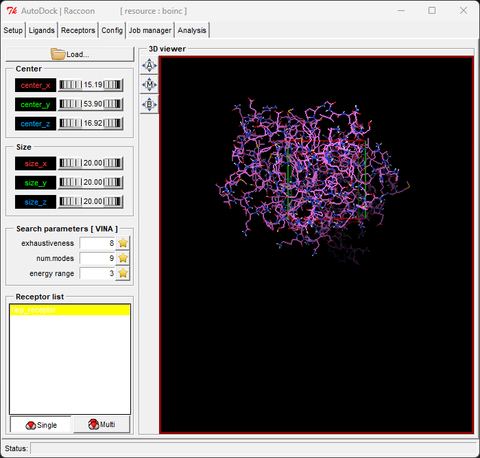
- Submit Job: Click the "Submit" button on the Job manager tab to submit the job to BOINC Central. All your submitted jobs will be listed in the Job manager tab, and you can monitor their status.
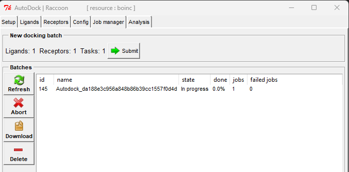
- Review Results: After the job is completed, you can download the results from the Job manager tab in Raccoon2 and review them later on the Analysis tab.
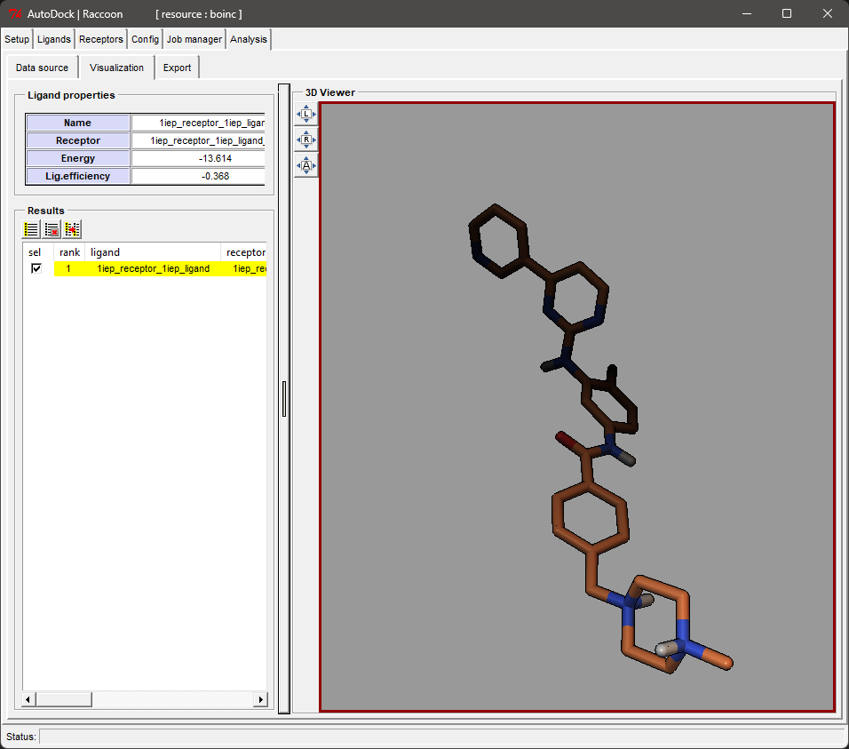
Contact
If you have any questions or need assistance with BOINC Central, you can contact us via the BOINC Central forum or by email. In case of any issues, please report them on the GitHub repository.